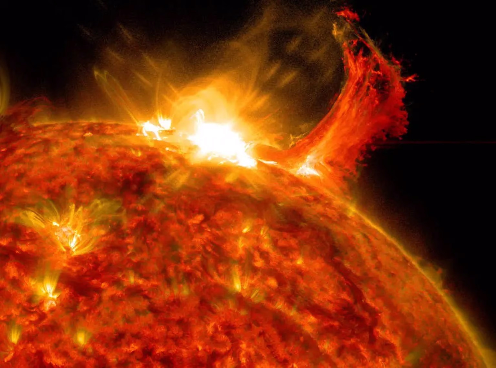

Sejarah sang matahari
Sejarah Matahari telah menyinari tata surya kita selama sekitar 4,6 miliar tahun. Matahari terbentuk seiring dengan pembentukan seluruh tata surya. Matahari berasal dari awan gas dan debu yang luas yang disebut nebula surya.
Seiring waktu, gaya gravitasi di dalam nebula menyebabkannya runtuh, membentuk cakram berputar. Di tengah cakram ini, Matahari lahir melalui reaksi fusi nuklir di intinya. Inilah awal kehidupan Matahari sebagai bintang utama yang stabil.
Sepanjang sejarahnya, Matahari telah mengalami berbagai fase, termasuk fase di mana ia akan mengalami perubahan signifikan. Namun, perannya sebagai sumber energi utama dalam tata surya kita tetap konstan, memberikan cahaya dan panas yang mendukung kehidupan di Bumi. Sejarah Matahari ini mencakup peristiwa-peristiwa besar yang membentuk dan mempertahankan eksistensinya hingga saat ini.
Struktur
Matahari, bintang paling terang dan terpenting dalam tata surya kita, memiliki struktur yang kompleks dan fascinatif. Dengan memahami komponen-komponennya, kita dapat meresapi keindahan dan kompleksitas alam semesta.
Inti Matahari
Inti Matahari merupakan jantung yang membara, di mana suhu dan tekanan sangat tinggi. Pada inti ini, reaksi nuklir menyatu menjadi satu, melepaskan energi luar biasa. Fusi nuklir hidrogen menjadi helium menciptakan pancaran cahaya dan panas yang menciptakan kehidupan matahari.
Mantel dan Kulit Matahari
Setelah energi dihasilkan di inti, sinar dan panas merambat melalui mantel dan kulit Matahari. Mantel, lapisan di luar inti, merupakan zona konveksi di mana energi diangkut oleh aliran massa gas panas. Kulit Matahari adalah lapisan terluar yang terlihat oleh mata manusia, di mana cahaya matahari bersinar terang.
Fotosfer dan Bintik Matahari
Fotosfer, bagian yang terlihat dari kulit Matahari, menampilkan lanskap penuh bintik matahari. Bintik-bintik ini adalah area yang relatif lebih dingin dan menunjukkan aktivitas magnetik yang kompleks. Pengamatan bintik matahari memberikan wawasan tentang dinamika permukaan Matahari.
Atmosfer Matahari
Atmosfer Matahari terdiri dari tiga lapisan utama: kromosfer, korona, dan pelorona. Kromosfer menampilkan gemerlap merah yang terlihat selama gerhana matahari total, sedangkan korona adalah lapisan terluar yang tampak sebagai aura yang memancar saat matahari terhalang. Pelorona adalah area di luar tata surya di mana pengaruh Matahari masih dapat dirasakan.
Siklus Hidup

Matahari, bintang yang memberikan cahaya dan kehangatan pada tata surya kita, menjalani perjalanan yang menakjubkan selama siklus hidupnya. Proses ini melibatkan perubahan fasa yang memengaruhi penampilannya dan dampaknya terhadap tata surya.
Fase Pembentukan
Siklus hidup Matahari dimulai dari fase pembentukan di dalam nebula surya, sebuah awan raksasa gas dan debu. Gravitasi menyebabkan nebula ini menyusut, membentuk cakram rotasi. Di pusatnya, materi mulai berkumpul dan meresap ke inti Matahari, memicu reaksi fusi nuklir dan memancarkan cahaya pertamanya.
Fase Utama
Setelah mencapai keseimbangan hidrostatik, Matahari memasuki fase utama, di mana energi yang dihasilkan oleh fusi nuklir di inti seimbang dengan tekanan gravitasi yang menariknya. Fase ini diperkirakan berlangsung selama sekitar 10 miliar tahun untuk Matahari. Selama periode ini, hidrogen di inti habis, dan helium mulai mengakumulasi.
Fase Raksasa Merah
Ketika persediaan hidrogen di inti habis, Matahari akan memasuki fase raksasa merah. Inti akan menyusut dan pemanasan, sementara lapisan luar membesar. Matahari akan mencapai ukuran yang luar biasa besar, mungkin memakan planet-planet terdekatnya.
Fase Nebula Planeter
Pada akhirnya, Matahari akan melepaskan lapisan luar di angkasa, membentuk nebula planeter. Inti yang tersisa akan menjadi bintang katai putih, menerangi nebula sekitarnya. Sisa-sisa dari fase ini akan berkontribusi pada pembentukan bintang dan planet baru di tata surya.
Aktivitas

Matahari, meskipun terlihat damai dari kejauhan, menyembunyikan aktivitas yang luar biasa di permukaannya. Fenomena ini tidak hanya memengaruhi penampilannya, tetapi juga memiliki dampak besar terhadap tata surya dan Bumi. Mari kita jelajahi beberapa aktivitas menarik Matahari.
Bintik Matahari
Bintik matahari adalah area di permukaan Matahari yang tampak lebih gelap karena suhu yang lebih rendah. Mereka muncul dan menghilang dalam siklus sekitar 11 tahunan yang dikenal sebagai Siklus Bintik Matahari. Aktivitas ini terkait dengan medan magnetik Matahari dan dapat mempengaruhi cuaca luar angkasa dan komunikasi di Bumi..
Letusan Matahari
Letusan matahari, atau erupsi matahari, adalah pelepasan energi besar di atmosfer Matahari. Ini dapat menyebabkan lonjakan radiasi dan partikel bermuatan yang mencapai Bumi, mempengaruhi aurora dan dapat mempengaruhi sistem satelit dan komunikasi. Studi tentang letusan matahari membantu kita memahami dinamika atmosfer Matahari.
Angin Matahari
Angin matahari adalah aliran partikel bermuatan yang terus-menerus berhembus dari Matahari ke ruang angkasa. Angin ini dapat mencapai kecepatan tinggi dan memengaruhi magnetosfer Bumi. Interaksi angin matahari dengan medan magnet Bumi dapat menciptakan aurora dan memiliki dampak signifikan pada sistem navigasi satelit.
Siklus Aktivitas Matahari
Matahari mengikuti siklus aktivitas sekitar 11 tahunan yang mencakup periode naik-turun aktivitas. Selama puncak siklus, terjadi lebih banyak bintik matahari dan letusan. Siklus ini memiliki dampak pada cuaca luar angkasa dan dapat memengaruhi kondisi di Bumi.